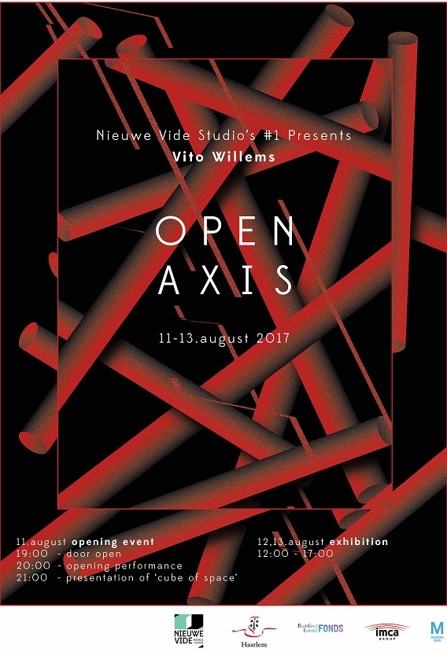
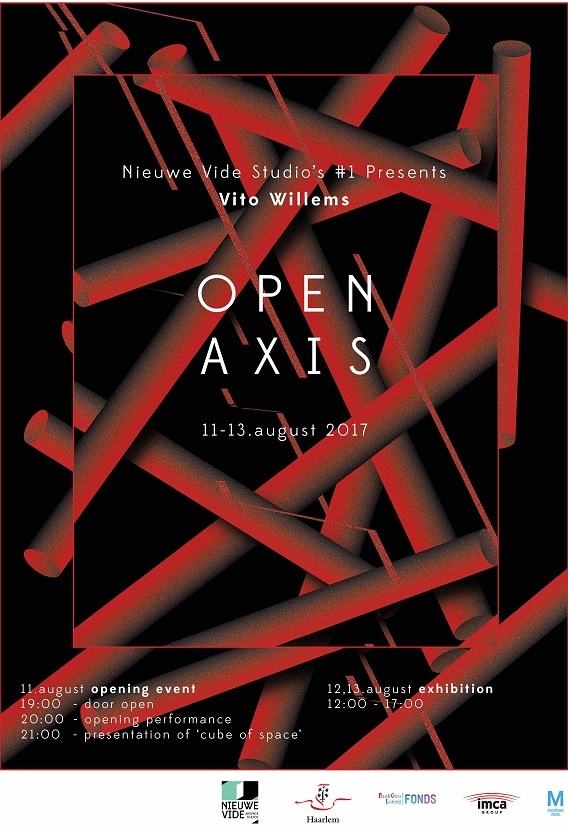

11.08.2017 + 13.08.2017 - Nieuwe Vide, Haarlem
28.10.2017 + 29.10.2017 - Dutch Design Week, Eindhoven
Author, Sound and System Design - Vito Willems
Spatial Design - Frederic de Milliano
Product Design - Joost Dankelman
Custom Electronics, Custom Hardware**, Custom Software, DMX Interface*, LED Pars*, LED Strips**, Leap-Motion, Audio Interface, Custom Stage, Modular Synth, MIDI-Controller, MIDI-Keyboard, Computer, Speakers, Arduino Mega*
*Only in Nieuwe Vide **Only at Dutch Design Week
Software
Sound and signal processing in Max/MSP, Serial communication with Arduino
This performance shows the interaction between human and machine. An intuitive anticipation towards problems that start to exist drives this dialogue of physical and nonphysical language. The result is a choreography conducted by the machine and this dialogue investigate new ways of communication through sound, space and light.
The first presentation of ‘Open Axis’ was part of the solo-exhibition of Vito Willems in de Nieuwe Vide in Haarlem. Investigating performative constellations developed for an improvisatory perspective. Through a consistent custom software system and a range of musical gestures a variety of expressions are challenged. The patches in the modular synth combined with digital processing (spatialisation and some fx) are used as main sound source. Its physicality appeared through the stage which was designed for an omni-placement of the gear. In the second version this improvisatory perspective started from the space, a glass-container, and created, together with architect Fred Demilliano and product designer Joost Dankelman a stage that would extend the performance and constituted a new interpretation of the piece.